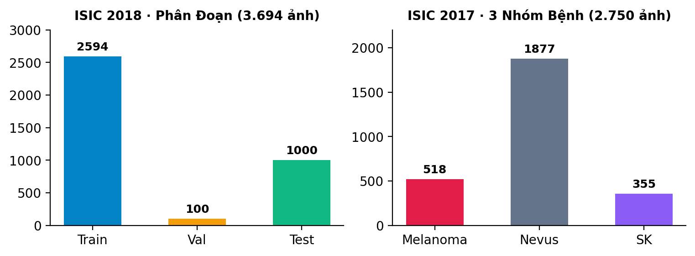
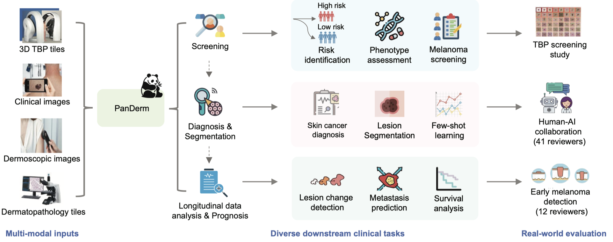
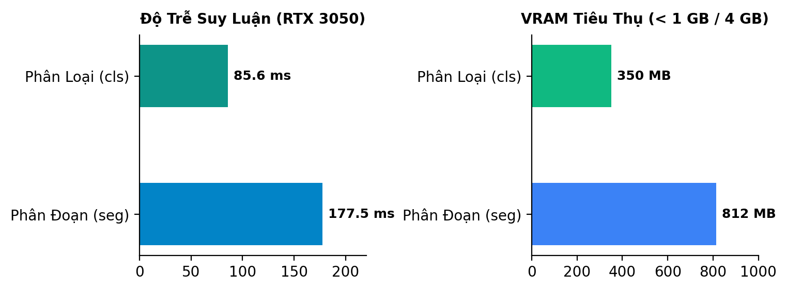

Nghiên cứu ứng dụng mô hình nền tảng ViT-B/16 kết hợp hồi quy tuyến tính một bước trên ảnh dermoscopy theo dõi qua thời gian (Δt).
| STT | Hạng mục công việc theo Đề cương | Trạng thái | Tiến độ | Minh chứng kỹ thuật thực tế |
|---|---|---|---|---|
| 01 | Khảo sát tài liệu & Điều kiện pháp lý dữ liệu | ĐÃ DUYỆT | 100% | Nature Med, Sc. Data; Phê duyệt quyền UQ & CC BY-NC-ND |
| 02 | Đề cương & Kế hoạch triển khai 14 tuần | HOÀN THÀNH | 100% | Khóa Protocol v1, Ke_hoach_trien_khai_2_nguoi.md |
| 03 | Tải dữ liệu ISIC, Kiểm tra nhãn/mask & Manifest split | HOÀN THÀNH | 100% | 3.694 ISIC 2018 + 2.750 ISIC 2017; Khóa hash SHA-256 |
| 04 | Pilot Checkpoint PanDerm Base, Vá lỗi & Thử nghiệm | HOÀN THÀNH | 100% | Độ phủ ViT-B 100%; Smoke test 20 ảnh; Optimizer resume PASS |
| 05 | Fine-tuning GPU Phân đoạn & Phân loại tham khảo | KẾ HOẠCH T4 | 0% | Đã sẵn sàng loader, patch, script run.sh; Chờ kích hoạt GPU |
| 06 | Ghép chuỗi dọc UQ & Huấn luyện Ridge dự báo | SẴN SÀNG | 0% | Đã chuẩn bị module nckh.infer và cấu trúc trích xuất z_t |
| 07 | Kiểm tra suy giảm ảnh (Robustness) & Giao diện Demo | ĐANG CHẠY | 20% | Dashboard Streamlit smoke test, module metrics CI 95% |

isic2017_cls_trainphase.csv.8cf5e733... lưu an toàn trên Google Drive, bảo đảm tính tái lập CLAIM.

be1e0fb1...).panderm_base_seg.patch độ phủ 100%.
| Tác vụ | Latency TB | P95 Latency | VRAM Đỉnh |
|---|---|---|---|
| Phân đoạn | 177.5 ms | 285.5 ms | 812.4 MB |
| Phân loại | 85.6 ms | 160.9 ms | 350.5 MB |
venv_seg & venv_cls riêng biệt.panderm_base_seg.patch.panderm_cls_resume.patch.Trình bày hạ tầng GPU, pilot checkpoint và 97 unit tests đạt tỷ lệ tuyệt đối.
Xin ý kiến GVHD về hyperparams (LR, batch size, 100 epochs) cho nhánh Seg & Cls.
Khởi động script huấn luyện Phase 5a trên GPU trường / Colab GPU ngay trong ngày.
Số 1 đã duyệt; P2 & P3 nghiệm thu hoàn tất; 97/97 unit tests passed.
Phân chia theo bệnh nhân; khóa SHA-256 an toàn chuẩn CLAIM.
Kích hoạt huấn luyện GPU ngay sau buổi họp và phê duyệt Thứ Tư.
Kính mong nhận được ý kiến đóng góp và chỉ dẫn từ TS. Nguyễn Ngọc Tân cùng Quý Thầy Cô!